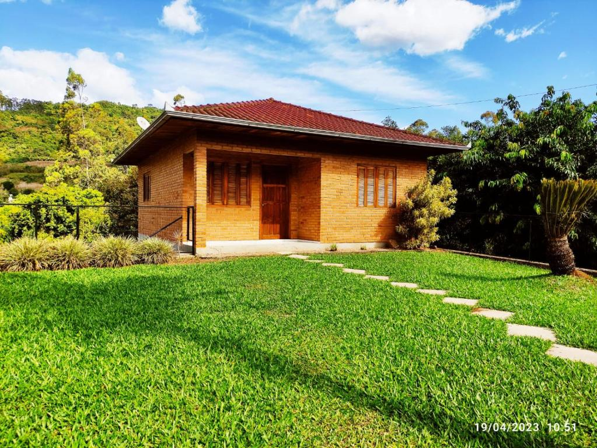

Um dia desses, dentro de um livro da biblioteca da escola, descobri uma carta antiga sobre uma cidade perdida, escondida por riquezas e belezas naturais. Nessa carta, a autora deixa algumas pistas para encontrar essa cidade e eu decidi segui-las!
Você começa sua jornada no Rio de Janeiro, subindo o Pico da Tijuca ao amanhecer para encontrar a primeira pista.

Você escalou a montanha.
Na montanha tem uma pista de salto de parapente, deseja se aventura em saltar de parapente?Você voltou pra casa.
Bem vindo a Pernambuco.
 Na cidade de Recfe tem lindas praias com lindos corais, bom para a prática de mergulho, gostaria de ir a praia mergulhar em Recife?
Na cidade de Recfe tem lindas praias com lindos corais, bom para a prática de mergulho, gostaria de ir a praia mergulhar em Recife?
Você está mergulhando em Recfe e de repente sofre um ataque de tubarões, defenda-se dos tubarões. Aponte o mouse para nadar e pressione espaço para disparar o arpão.
Você saltou de parapente e infelizmente o tempo fechou e começou a trovejar, desvie dos trovões.
Você está na cidade de Varginia MG, a cidade ficou famosa pelos moradores dizrem que viram objetos voadores não identificados (OVNI) e seres exta terrestre (ET).

A cidade está sendo atacada por OVNIs, há uma estação espacial próximo, pegue um foguete, decole e vença o OVNI.
Aperte espaço para atirar, e use o mouse para se movimentar, destrua os meteoros e vença o OVNI.